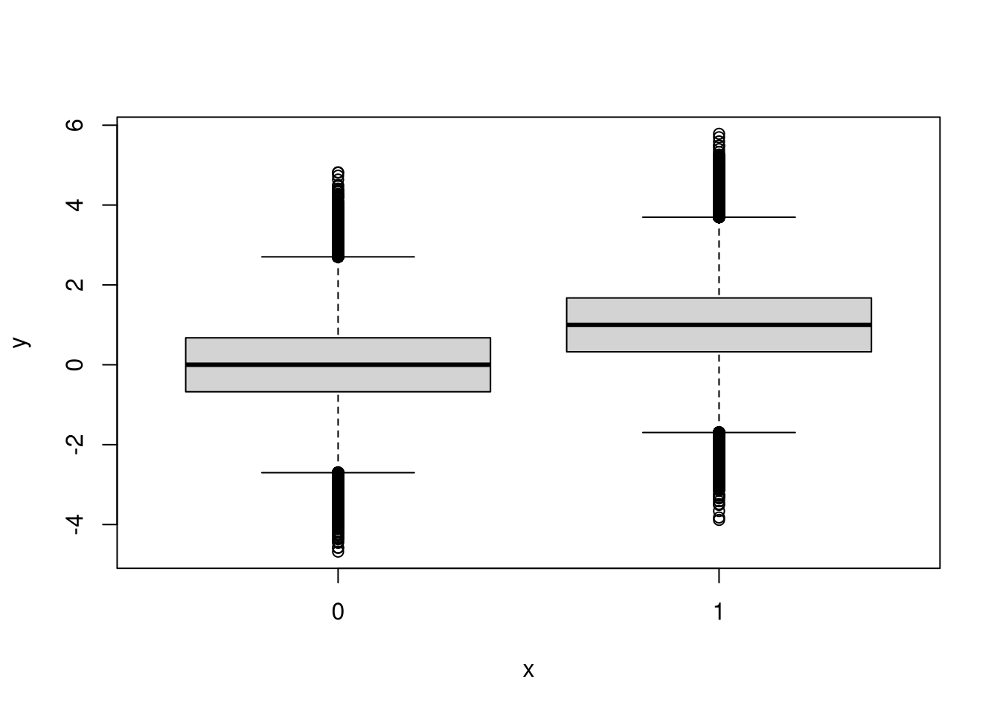
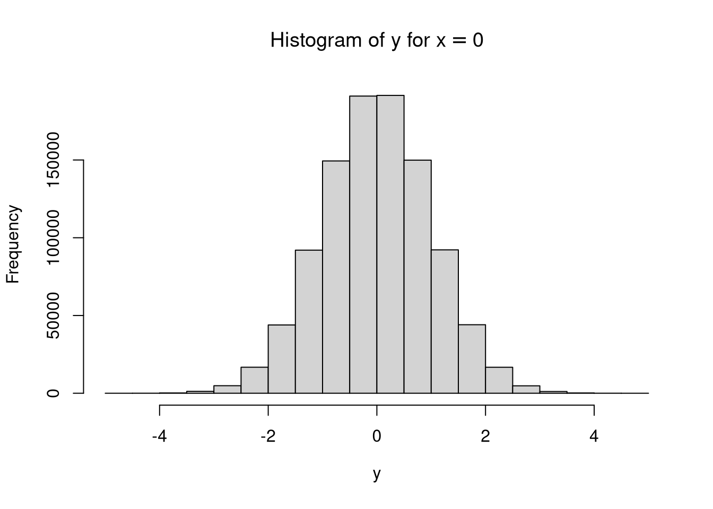
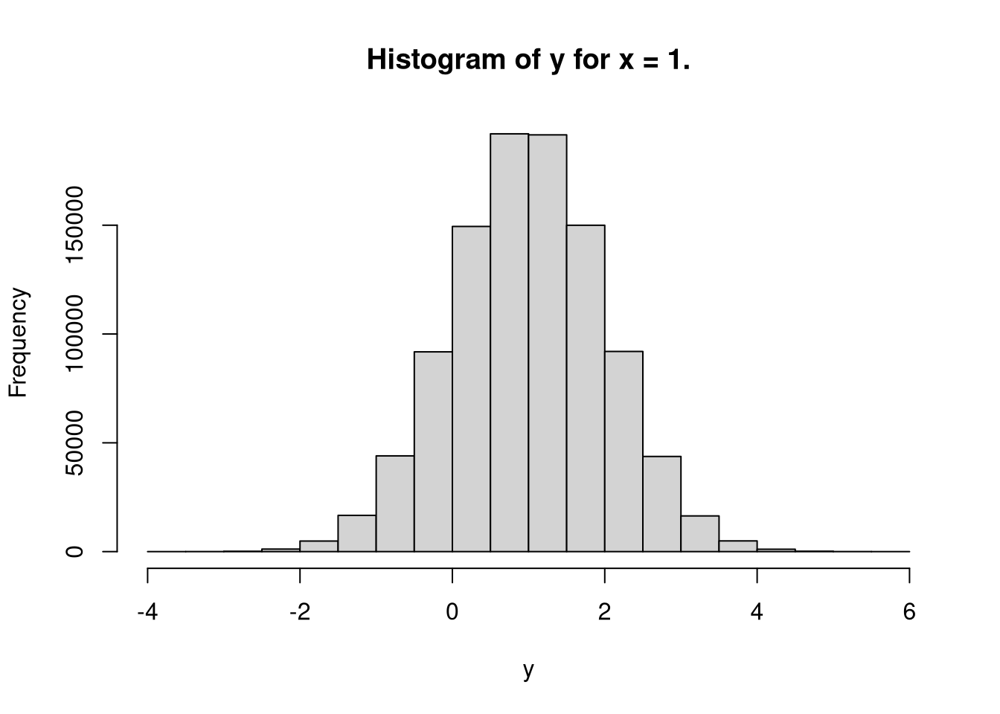

Chapter 4 Student’s \(t\)-test
In this section, the Student’s \(t\)-test is presented as a structural equation model using the RAM notation. Let \(y\) be a continuous dependent variable, \(x\) be a dichotomous independent variable \(\left( x = \{0, 1\} \right)\), and \(\varepsilon\) be the stochastic error term with mean 0 and constant variance of \(\sigma_{\varepsilon}^{2}\) across the values of \(x\). The associations of the variables are given by
\[\begin{equation*} y = \alpha + \beta x + \varepsilon \end{equation*}\]
where
- \(\alpha\) is the expected value of \(y\) when \(x = 0\)
- \(\beta\) is the unit change in \(y\) for unit change in \(x\)
- \(\alpha + \beta\) is the expected value of \(y\) when \(x = 1\)
Figure 4.1: Student’s \(t\)-test
4.1 Symbolic
Let \(\left\{ y, x, \varepsilon \right\}\) be the variables of interest.
\[\begin{align*}\mathbf{A} &=\left( \begin{array}{ccc} 0 & \beta & 1 \\ 0 & 0 & 0 \\ 0 & 0 & 0 \end{array} \right)\end{align*}\]
\[\begin{align*}\mathbf{S} &=\left( \begin{array}{ccc} 0 & 0 & 0 \\ 0 & \sigma _{x} ^{2} & 0 \\ 0 & 0 & \sigma _{\varepsilon } ^{2} \end{array} \right)\end{align*}\]
\[\begin{align*}\mathbf{C} &=\left( \mathbf{I} - \mathbf{A} \right)^{-1} \mathbf{S} \left[ \left( \mathbf{I} - \mathbf{A} \right)^{-1} \right]^{\mathsf{T}} \\\\ &=\mathbf{E} \mathbf{S} \mathbf{E}^{\mathsf{T}} \\\\ &=\left( \begin{array}{ccc} 1 & \beta & 1 \\ 0 & 1 & 0 \\ 0 & 0 & 1 \end{array} \right)\left( \begin{array}{ccc} 0 & 0 & 0 \\ 0 & \sigma _{x} ^{2} & 0 \\ 0 & 0 & \sigma _{\varepsilon } ^{2} \end{array} \right)\left( \begin{array}{ccc} 1 & \beta & 1 \\ 0 & 1 & 0 \\ 0 & 0 & 1 \end{array} \right)^{\mathsf{T}}\\ &=\left( \begin{array}{ccc} \sigma _{x} ^{2} \beta ^{2} + \sigma _{\varepsilon } ^{2} & \beta \sigma _{x} ^{2} & \sigma _{\varepsilon } ^{2} \\ \sigma _{x} ^{2} \beta & \sigma _{x} ^{2} & 0 \\ \sigma _{\varepsilon } ^{2} & 0 & \sigma _{\varepsilon } ^{2} \end{array} \right)\end{align*}\]
\[\begin{align*}\mathbf{F} &=\left( \begin{array}{ccc} 1 & 0 & 0 \\ 0 & 1 & 0 \end{array} \right)\end{align*}\]
\[\begin{align*}\mathbf{M} &=\mathbf{F} \left( \mathbf{I} - \mathbf{A} \right)^{-1} \mathbf{S} \left[ \left( \mathbf{I} - \mathbf{A} \right)^{-1} \right]^{\mathsf{T}} \mathbf{F}^{\mathsf{T}}\\ &=\mathbf{F} \mathbf{E} \mathbf{S} \mathbf{E}^{\mathsf{T}} \mathbf{F}^{\mathsf{T}} \\\\ &=\mathbf{F} \mathbf{C} \mathbf{F}^{\mathsf{T}} \\\\ &=\left( \begin{array}{ccc} 1 & 0 & 0 \\ 0 & 1 & 0 \end{array} \right)\left( \begin{array}{ccc} \sigma _{x} ^{2} \beta ^{2} + \sigma _{\varepsilon } ^{2} & \beta \sigma _{x} ^{2} & \sigma _{\varepsilon } ^{2} \\ \sigma _{x} ^{2} \beta & \sigma _{x} ^{2} & 0 \\ \sigma _{\varepsilon } ^{2} & 0 & \sigma _{\varepsilon } ^{2} \end{array} \right)\left( \begin{array}{ccc} 1 & 0 & 0 \\ 0 & 1 & 0 \end{array} \right)^{\mathsf{T}} \\\\ &=\left( \begin{array}{cc} \sigma _{x} ^{2} \beta ^{2} + \sigma _{\varepsilon } ^{2} & \beta \sigma _{x} ^{2} \\ \sigma _{x} ^{2} \beta & \sigma _{x} ^{2} \end{array} \right)\end{align*}\]
\[\begin{align*}\mathbf{v} &=\left( \mathbf{I} - \mathbf{A} \right)^{-1} \mathbf{u}\\ &=\left[\left( \begin{array}{ccc} 1 & 0 & 0 \\ 0 & 1 & 0 \\ 0 & 0 & 1 \end{array} \right)-\left( \begin{array}{ccc} 0 & \beta & 1 \\ 0 & 0 & 0 \\ 0 & 0 & 0 \end{array} \right)\right]^{\mathsf{-1}}\left( \begin{array}{c} \alpha \\ \mu _{x} \\ 0 \end{array} \right)\\ &=\left( \begin{array}{c} \alpha + \beta \mu _{x} \\ \mu _{x} \\ 0 \end{array} \right)\end{align*}\]
\[\begin{align*}\mathbf{u} &=\left( \mathbf{I} - \mathbf{A} \right) \mathbf{v}\\ &=\left[\left( \begin{array}{ccc} 1 & 0 & 0 \\ 0 & 1 & 0 \\ 0 & 0 & 1 \end{array} \right)-\left( \begin{array}{ccc} 0 & \beta & 1 \\ 0 & 0 & 0 \\ 0 & 0 & 0 \end{array} \right)\right]\left( \begin{array}{c} \alpha + \beta \mu _{x} \\ \mu _{x} \\ 0 \end{array} \right)\\ &=\left( \begin{array}{c} \alpha \\ \mu _{x} \\ 0 \end{array} \right)\end{align*}\]
\[\begin{align*}\mathbf{g} &=\mathbf{F} \left( \mathbf{I} - \mathbf{A} \right)^{-1} \mathbf{u}\\ &=\left[\left( \begin{array}{ccc} 1 & 0 & 0 \\ 0 & 1 & 0 \\ 0 & 0 & 1 \end{array} \right)-\left( \begin{array}{ccc} 0 & \beta & 1 \\ 0 & 0 & 0 \\ 0 & 0 & 0 \end{array} \right)\right]^{-1}\left( \begin{array}{c} \alpha \\ \mu _{x} \\ 0 \end{array} \right)\\ &=\left( \begin{array}{c} \alpha + \beta \mu _{x} \\ \mu _{x} \end{array} \right)\end{align*}\]
4.1.1 Using the ramR Package
A## [,1] [,2] [,3]
## [1,] "0" "beta" "1"
## [2,] "0" "0" "0"
## [3,] "0" "0" "0"S## [,1] [,2] [,3]
## [1,] "0" "0" "0"
## [2,] "0" "sigma[x]^2" "0"
## [3,] "0" "0" "sigma[varepsilon]^2"u## [,1]
## [1,] "alpha"
## [2,] "mu[x]"
## [3,] "0"filter## [,1] [,2] [,3]
## [1,] 1 0 0
## [2,] 0 1 0The covariance expectations
can be symbolically derived using the ramR::C_sym() function.
ramR::C_sym(A, S)## {{sigma[x]^2*beta^2+sigma[varepsilon]^2, beta*sigma[x]^2, sigma[varepsilon]^2},
## { sigma[x]^2*beta, sigma[x]^2, 0},
## { sigma[varepsilon]^2, 0, sigma[varepsilon]^2}}\[\begin{equation*}\mathbf{C} =\left( \begin{array}{ccc} \sigma _{x} ^{2} \beta ^{2} + \sigma _{\varepsilon } ^{2} & \beta \sigma _{x} ^{2} & \sigma _{\varepsilon } ^{2} \\ \sigma _{x} ^{2} \beta & \sigma _{x} ^{2} & 0 \\ \sigma _{\varepsilon } ^{2} & 0 & \sigma _{\varepsilon } ^{2} \end{array} \right)\end{equation*}\]
The covariance expectations for the observed variables
can be symbolically derived using the ramR::M_sym() function.
ramR::M_sym(A, S, filter)## {{sigma[x]^2*beta^2+sigma[varepsilon]^2, beta*sigma[x]^2},
## { sigma[x]^2*beta, sigma[x]^2}}\[\begin{equation*}\mathbf{M} =\left( \begin{array}{cc} \sigma _{x} ^{2} \beta ^{2} + \sigma _{\varepsilon } ^{2} & \beta \sigma _{x} ^{2} \\ \sigma _{x} ^{2} \beta & \sigma _{x} ^{2} \end{array} \right)\end{equation*}\]
The mean expectations
can be symbolically derived using the ramR::v_sym() function.
ramR::v_sym(A, u)## {{alpha+beta*mu[x]},
## { mu[x]},
## { 0}}\[\begin{equation*}\mathbf{v} =\left( \begin{array}{c} \alpha + \beta \mu _{x} \\ \mu _{x} \\ 0 \end{array} \right)\end{equation*}\]
The mean expectations for the observed variables
can be symbolically derived using the ramR::g_sym() function.
ramR::g_sym(A, u, filter)## {{alpha+beta*mu[x]},
## { mu[x]}}\[\begin{equation*}\mathbf{g} =\left( \begin{array}{c} \alpha + \beta \mu _{x} \\ \mu _{x} \end{array} \right)\end{equation*}\]
4.2 Numerical Example
head(df)## y x
## 1 1.3709584 0
## 2 -0.5646982 0
## 3 0.3631284 0
## 4 0.6328626 0
## 5 0.4042683 0
## 6 -0.1061245 0summary(df)## y x
## Min. :-4.6785 Min. :0.0
## 1st Qu.:-0.2622 1st Qu.:0.0
## Median : 0.5013 Median :0.5
## Mean : 0.5000 Mean :0.5
## 3rd Qu.: 1.2618 3rd Qu.:1.0
## Max. : 5.7839 Max. :1.0
4.2.1 \(t\)-test
t.test <- t.test(y ~ x, data = df)
t.test##
## Welch Two Sample t-test
##
## data: y by x
## t = -706.06, df = 2e+06, p-value < 2.2e-16
## alternative hypothesis: true difference in means is not equal to 0
## 95 percent confidence interval:
## -1.0016565 -0.9961108
## sample estimates:
## mean in group 0 mean in group 1
## 0.0005737398 0.9994574009t.test$estimate## mean in group 0 mean in group 1
## 0.0005737398 0.99945740094.2.2 Linear Regression
lm <- lm(y ~ x, data = df)
summary(lm)##
## Call:
## lm(formula = y ~ x, data = df)
##
## Residuals:
## Min 1Q Median 3Q Max
## -4.8838 -0.6745 0.0005 0.6749 4.8195
##
## Coefficients:
## Estimate Std. Error t value Pr(>|t|)
## (Intercept) 0.0005737 0.0010004 0.574 0.566
## x 0.9988837 0.0014147 706.057 <2e-16 ***
## ---
## Signif. codes: 0 '***' 0.001 '**' 0.01 '*' 0.05 '.' 0.1 ' ' 1
##
## Residual standard error: 1 on 1999998 degrees of freedom
## Multiple R-squared: 0.1995, Adjusted R-squared: 0.1995
## F-statistic: 4.985e+05 on 1 and 1999998 DF, p-value: < 2.2e-16coef(lm)## (Intercept) x
## 0.0005737398 0.99888366114.2.3 Structural Equation Modeling
model <- "
y ~ x
y ~ 1
x ~ 1
"
fit <- lavaan::sem(model, data = df)
lavaan::summary(fit)## lavaan 0.6-7 ended normally after 15 iterations
##
## Estimator ML
## Optimization method NLMINB
## Number of free parameters 5
##
## Number of observations 2000000
##
## Model Test User Model:
##
## Test statistic 0.000
## Degrees of freedom 0
##
## Parameter Estimates:
##
## Standard errors Standard
## Information Expected
## Information saturated (h1) model Structured
##
## Regressions:
## Estimate Std.Err z-value P(>|z|)
## y ~
## x 0.999 0.001 706.057 0.000
##
## Intercepts:
## Estimate Std.Err z-value P(>|z|)
## .y 0.001 0.001 0.574 0.566
## x 0.500 0.000 1414.214 0.000
##
## Variances:
## Estimate Std.Err z-value P(>|z|)
## .y 1.001 0.001 1000.000 0.000
## x 0.250 0.000 1000.000 0.000lavaan::coef(fit)## y~x y~1 x~1 y~~y x~~x
## 0.999 0.001 0.500 1.001 0.250| label | parameter |
|---|---|
| \(\alpha\) | 0 |
| \(\beta\) | 1 |
| \(\sigma^{2}_{x}\) | 0.25 |
| \(\sigma^{2}_{\varepsilon}\) | 0.25 |
| \(\mu_x\) | 0.5 |
4.2.4 Using the ramR Package
A## y x e
## y 0 0.9988837 1
## x 0 0.0000000 0
## e 0 0.0000000 0S## y x e
## y 0 0.0000000 0.0000000
## x 0 0.2500001 0.0000000
## e 0 0.0000000 0.2494423u## [,1]
## y 0.0005737398
## x 0.5000000000
## e 0.0000000000filter## y x e
## y 1 0 0
## x 0 1 0The covariance expectations
can be numerically derived using the ramR::C_num() function.
ramR::C_num(A, S)## y x e
## y 0.4988845 0.2497210 0.2494423
## x 0.2497210 0.2500001 0.0000000
## e 0.2494423 0.0000000 0.2494423The covariance expectations for the observed variables
can be numerically derived using the ramR::M_num() function.
ramR::M_num(A, S, filter)## y x
## y 0.4988845 0.2497210
## x 0.2497210 0.2500001The mean expectations
can be numerically derived using the ramR::v_num() function.
ramR::v_num(A, u)## v
## y 0.5000156
## x 0.5000000
## e 0.0000000The mean expectations for the observed variables
can be numerically derived using the ramR::v_num() function.
ramR::g_num(A, u, filter)## g
## y 0.5000156
## x 0.50000004.3 Equations to RAM
The ramR package has a utility function to convert structural equations to RAM notation.
The Student’s \(t\)-test can be expressed in the following equations
model <- "
# VARIABLE1 OPERATION VARIABLE2 LABEL
e by y 1;
y on x beta;
e with e sigma[varepsilon]^2;
x with x sigma[x]^2;
y on 1 alpha;
x on 1 mu[x]
"The error term is treated as a latent variable and defined with the operation by.
It’s value is constrained to \(1\).
The regression of \(y\) on \(x\) is defined by operation on.
It is labeled as beta.
The variance of \(x\) and the error variance are defined using the operation with.
These are labeled sigma[x]^2 and sigma[varepsilon]^2 respectively.
The intercept and the mean of \(x\) are defined using the operation on 1.
These are labeled alpha and mu[x] respectively.
The ramR::eq2ram converts the equations to RAM notation.
RAM <- ramR::eq2ram(model)
RAM## $A
## y x e
## y "0" "beta" "1"
## x "0" "0" "0"
## e "0" "0" "0"
##
## $S
## y x e
## y "0" "0" "0"
## x "0" "sigma[x]^2" "0"
## e "0" "0" "sigma[varepsilon]^2"
##
## $filter
## y x e
## y 1 0 0
## x 0 1 0
##
## $u
## u
## y "alpha"
## x "mu[x]"
## e "0"The *_sym functions can be used on the results of ramR::eq2ram
to derive the covariance and mean expectations.
ramR::C_sym(RAM$A, RAM$S)\[\begin{equation*}\mathbf{C} =\left( \begin{array}{ccc} \sigma _{x} ^{2} \beta ^{2} + \sigma _{\varepsilon } ^{2} & \beta \sigma _{x} ^{2} & \sigma _{\varepsilon } ^{2} \\ \sigma _{x} ^{2} \beta & \sigma _{x} ^{2} & 0 \\ \sigma _{\varepsilon } ^{2} & 0 & \sigma _{\varepsilon } ^{2} \end{array} \right)\end{equation*}\]
ramR::M_sym(RAM$A, RAM$S, RAM$filter)\[\begin{equation*}\mathbf{M} =\left( \begin{array}{cc} \sigma _{x} ^{2} \beta ^{2} + \sigma _{\varepsilon } ^{2} & \beta \sigma _{x} ^{2} \\ \sigma _{x} ^{2} \beta & \sigma _{x} ^{2} \end{array} \right)\end{equation*}\]
ramR::v_sym(RAM$A, RAM$u)\[\begin{equation*}\mathbf{v} =\left( \begin{array}{c} \alpha + \beta \mu _{x} \\ \mu _{x} \\ 0 \end{array} \right)\end{equation*}\]
ramR::g_sym(RAM$A, RAM$u, RAM$filter)\[\begin{equation*}\mathbf{g} =\left( \begin{array}{c} \alpha + \beta \mu _{x} \\ \mu _{x} \end{array} \right)\end{equation*}\]